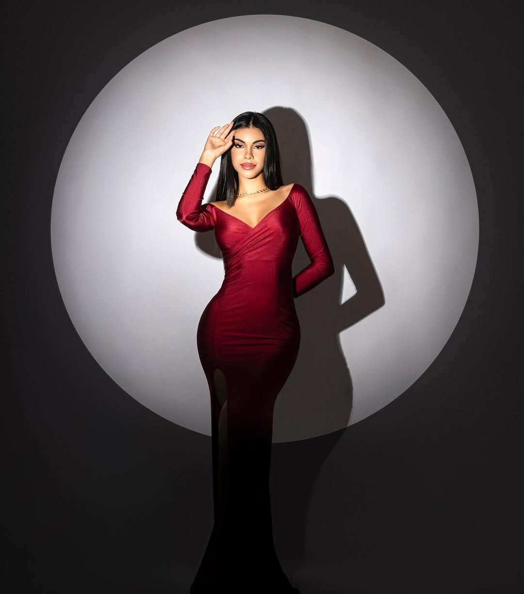

Tienes que ser paciente cuando te estás convirtiendo en la mujer que nunca fuiste antes.
¿Y si lo único que te falta es recordarlo?
Soy Alexandra. Escribo recordatorios para las mujeres que están aprendiendo a escoger — empezando por ellas mismas.
Baja despacio.
¿Y si lo único que te falta
…es recordarlo?
Tres formas de empezar.
-
01
La carta de los lunes
Una carta corta cada lunes, gratis. Un recordatorio para empezar la semana escogiendo mejor.
-
02
El Vault
La colección completa: doce capítulos — el Manifiesto y once guías — escritos para quedarse contigo. Se lee en tu teléfono. Es tuyo para siempre.
Precio fundador · se anuncia al abrir
-
03
El Club Recordatorio
Un recordatorio nuevo cada semana, el archivo completo y un círculo de mujeres en el mismo proceso.
Abre después del Vault
El respeto por ti misma debe ser más fuerte que tu deseo por sentirte amada.
Por suerte, siempre me tengo a mi. Nunca pierdo, gano o aprendo.

Del archivo

— Alexandra
“Yo si te hice caso hermosa, me caso mañana 🙊🙊❤️🩹”
¿Todavía no? La carta de los lunes es gratis.
Una carta corta cada lunes. Sin ruido, sin promesas — un recordatorio.
Te llegará un correo para confirmar tu suscripción. Un clic para salir, cuando quieras. Más en la Política de Privacidad.
Revisa tu correo — hay una confirmación esperándote. 🤍
Revisa el correo — algo no cuadra.